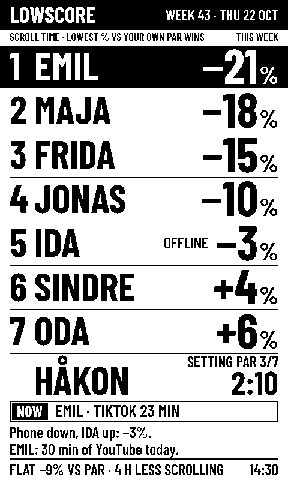

Who in your flat scrolls the least?
Lowscore is a scoreboard for the kitchen. Phones send their scroll time by themselves, and whoever cuts the most against their own normal wins the week.
The first season is free. No app on iPhone, no account.
- 1EMIL−21%
- 2MAJA−18%
- 3FRIDA−15%
- 4JONAS−10%
- 5SINDRE+4%
- 6ODA+6%
JONAS is 10% under par this week.
SINDRE: Twitch × 3 boiled eggs.
How it works
Make the board
Give your flat a name. You get a link to the board and a QR code for the others to scan.
Connect the phones
On iPhone, a shortcut tells the board when Instagram, TikTok and the others open and close. On Android, a small app does it. Five minutes, once per phone.
Find your par
In the first week, the board measures how much each of you usually scrolls. That becomes your par.
Lowest percentage wins
Each week, everyone is ranked by how far under or over their own par they are. On Monday, the week's winner is crowned.
You're up against yourself
The heaviest scroller isn't out of the running. The board counts percent against your own par, not minutes.
| Player | Par | This week | Score |
|---|---|---|---|
| SIRI | 2:40 | 2:13 | −17 % |
| OLA | 2:13 | 1:58 | −11 % |
A day the phone doesn't report counts as par plus 20%. Each week, the worst day above par counts as just par, so one long train ride doesn't ruin the week. All the rules
What the board sees, and what it never sees
The board sees
- Your minutes per day in the apps your flat chose. By default Instagram, TikTok, YouTube, Snapchat, Facebook, X, Reddit and Twitch.
- Only if you turn on roast mode: minutes per app, and which one you're in right now. It's your choice, and it's off until you turn it on.
The board never sees
- Messages, what you watch, photos, websites, contacts or where you are.
- Other apps, or how long your phone is in use in total.
Leave the game whenever you like, and everything about you is deleted at once. The data sits in a database in Stockholm, and we sell nothing to anyone. The privacy policy
Two ways to put up the board
An old tablet or phone
Open the board link, add it to the home screen and keep it charging. It updates every minute. Free, and ready today.
The e-paper board
An e-paper screen that runs on battery, hangs on the fridge with magnets and updates every 15 minutes. Five flats in Bergen get to borrow one in the January pilot.
Already have a TRMNL? It can show the board now.

What it costs
The first season is free. After that, a flat pass costs NOK 149 for half a year, for the whole flat.
The first season is the calibration week plus four weeks of competition. If you're five, the flat pass comes to under 5 kroner a month each.
The pass doesn't renew by itself. When it runs out, the board says so, and whoever set it up can buy a new one. Change your mind within 14 days and you get all your money back.
The Bergen pilot
In January 2027, five flats in Bergen each borrow an e-paper board for four weeks, free. We come and set it up, and pick it up again afterwards. Everyone in the flat has to want to take part.
Sign up your flatQuestions
Does everyone in the flat have to play?
No. Only those who join are on the board. Two is enough to start.
Do I need an app?
On iPhone, no: you use Shortcuts, which is already on the phone. On Android you install a small app from the link you get when you join.
Can the others see what I do on my phone?
No. The board only gets minutes in the apps on the list. With roast mode off it shows only your total, not which apps the minutes came from.
Does Lowscore block apps?
No. Lowscore only counts. The rest is up to you.
What happens when the free season is over?
The board keeps showing the standings, but its two joke lines are replaced by a reminder about the flat pass. Whoever set up the board buys it on the settings page.
Who's behind it?
Vebjørn, a student in Bergen. Much of the work, from the code to these words, was done by Claude, an AI from Anthropic, while Vebjørn decided, tested and built. That's part of the point: we show openly how far it goes. How Lowscore was made.
Ready for week one?
Make the board now. The first season is free.